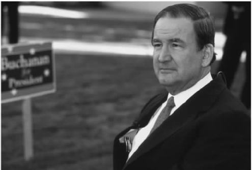
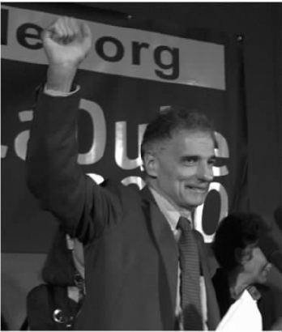
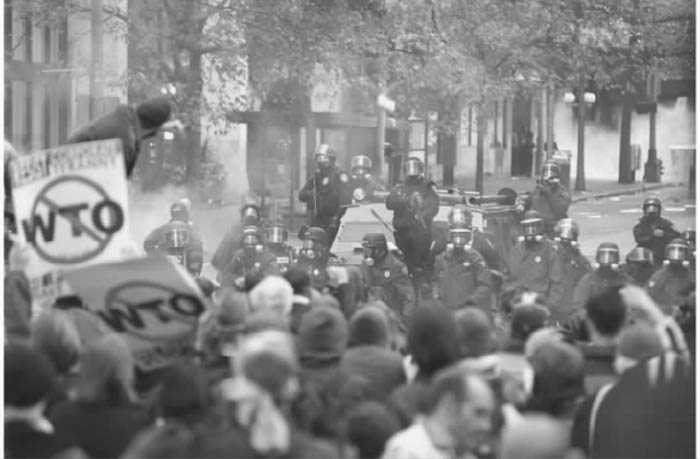
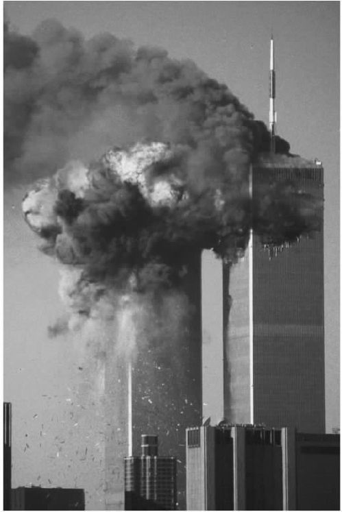

作为我们这个时代主导性的意识形态，全球主义对于全球化的新自由主义认识已经牢固地铭刻在了全世界很多人的心里；强大的政治机构和经济团体转而又在进一步维持并确认着这一认识。然而，从没有哪种意识形态具有绝对的控制优势。人们的切身经验与意识形态主张之间存在的差距，可能会给主导性的模式带来危机。这时，持不同见解的社会团体就会感觉到比较容易向公众传达它们的思想、信念和行为实践。
20世纪行将结束之时，在关于全球化的公共话语中，反全球主义的观点开始受到了更多的关注；这一过程之所以产生，是由于人们更加清醒地意识到，公司贪婪的利润策略正在导致全球财富与福利差距日益扩大。1999到2001年间，在全世界许多城市，全球主义与其意识形态挑战者的斗争以街头冲突的形式爆发，最后发展成为一场史无前例的针对美国的恐怖主义袭击，导致三千多人死亡。这些反全球主义的力量是什么呢？
这些不同的社会力量共有的一个信念就是，它们必须保护自己和相关各方不受全球化带来的消极后果的影响。从这个方面来说，他们都是某种“保护主义者”。然而最重要的是，我们必须记住反全球主义者追求的目标十分宽泛，他们发展政治议程的手段各不相同。例如，在估量全球化的形成特点、原因以及什么才可以被准确地归为“消极后果”的时候，他们之间存在着广泛的分歧。即使会显得过于简单化，我仍然建议把反全球主义的团体划分为两大意识形态阵营；在此基础上，还可以根据另外的标准再进一步将其细分。
在美国，帕特里克·布坎南和H.罗斯·佩罗是坚持特定论保护主义立场的两个主要代表。在欧洲，民族主义政党（如约尔格·海德尔领导下的奥地利自由党、让-马里·勒庞领导下的法国民族阵线和格哈德·弗雷领导下的德国人民联盟）都表示反对“美式的全球化”。在南半球，人们可以发现类似的态度，如奥萨玛·本·拉登对伊斯兰教义的偏激理解，或者乌戈·查韦斯总统委内瑞拉式的民粹主义。让我们再次记住，我们不仅要在这些团体的政治进程方面，而且还要按照它们反全球化斗争的手段——从恐怖袭击到非暴力的议会式方法——对它们加以区别。
特定论保护主义
在美国，消费者保护人拉尔夫·纳德崭露头角，成为了普世论保护主义者的主要代表人物。在欧洲，已成立的绿色团体的代言人早就指出，毫无节制的新自由主义的全球化已经导致了全球环境的严重恶化。欧洲和美国的无政府主义者也赞成这一观点，但是，与纳德和绿色人士不同，他们为达到目标，情愿有选择性地使用一些暴力手段。在南半球，反新自由主义的民主大众运动代表了普世论保护主义者的观点，如墨西哥的萨帕塔运动、印度的抱树运动和海地总统让——贝特朗·阿里斯蒂德领导的穷人运动都是如此。其中一些团体已经和反全球主义的国际非政府组织建立了密切的联系。
普世论保护主义
在讨论近几年主要的反全球主义活动之前，我们先来详细地看一下这两大反全球主义阵营最引人注目的代言人。
从20世纪60年代早期开始，帕特里克·J.布坎南就与美国共和党的右翼联系在了一起。他把自己看做一个富有爱国主义精神的保护者，保护“辛勤的美国人”，反对公司精英、近来的移民、福利接受者以及享受“特权”的少数族裔。近年来，美国民族主义组织的数量陡然上升，他们反全球主义的言辞甚至比布坎南的民族主义更加极端。一些如约翰·伯奇协会、基督教联盟、自由游说团以及所谓的爱国和民兵运动之类的团体深信，全球化是美国许多社会问题的根源。他们觉得全球化在吞噬自己的国家，是一种异己的邪恶的意识形态，他们担心跨国势力正在无情地销蚀着“美国的传统生活方式”。
就自由贸易和移民问题与共和党高层产生严重分歧之后，布坎南在2000年脱离了共和党，成为民粹改革党的总统候选人。在其畅销书和激烈的竞选演讲中，他把自己的反全球化立场说成是“经济民族主义”——按照为狭隘的民族利益服务的方式来设计经济。他经常这样来表达自己的信念：在当代美国社会的核心，美国民族主义的要求与全球经济控制之间存在着难以抑制的冲突。布坎南认为，美国大多数主流政客都受制于跨国公司的利益，这些利益支持由国际贸易组织和其他国际机构牵头的全球管理结构，正在损害着美国的国家主权。同时，他也指责“倡导多元文化主义的自由主义者”为百万移民打开了国门，而这些移民正是造成美国经济和道德衰退的原因。

图11 帕特里克·J.布坎南。
欧洲特定论保护主义者就经济民族主义发表的讲话也愈发激烈，这使他们更容易激发公众对全球化带来的经济和文化后果的焦虑。他们的目标是国际银行家、货币交易者、“自由资本”、跨国公司以及布鲁塞尔的欧盟管理机构。从西班牙到俄罗斯的右翼党派都把全球化看成是对国家主权和自决权的最大威胁，都在全力倡导保护主义的措施和重新调整国际金融市场。
当反全球主义的言谈与所谓的“外国人问题”合为一体时，它似乎成了一种特别有效的武器。许多年来，在奥地利、德国和欧洲其他国家，移民、客籍劳工以及总体上的“过度异国化”问题已经成为了触发公众怨恨的催化剂，因为外国人很容易被人看成是威胁侨居国文化传承和文化身份的替罪羊。仇外通常与成功地妖魔化全球化密切相关。认为全球化是必然的、不可逆转的这种全球主义的主张，经常遭到依照特定论保护主义主题组织起来的政党的攻击。附和着布坎南的措辞，它们呼吁强势政治领导人的出现，以中断新自由主义这一主宰世界的力量。这些党派中的大多数人都预见，会出现一个由欧洲主权国家组成的“欧洲堡垒”，这些国家会维护本地区的政治、经济和文化独立。
北半球特定论保护主义的兴起是对新自由主义全球化带来的经济困顿和文化混乱的权威性反应。“全球化的受害者”包括产业工人、小企业主和小农场主，这些人对稳固界限与熟悉秩序的解体感到非常焦虑。他们的政治代表向公众表达了一个愿望，即希望建立一个文化统一、道德稳固及具有民族优越感的真实世界或想象世界。
奥萨玛·本·拉登激进的伊斯兰教义也带有一种家长式的等级制风格。本·拉登表现出具有超凡魅力的领导者和无畏的信仰捍卫者的形象，其宗教激进思想激发他与被自己看做是异己的邪恶势力做斗争。在阿拉伯世界，人们通常把全球化与美国的经济和文化统治联系在一起。如第一章所指出的，像本·拉登的“基地”恐怖网络这样的宗教组织增强了一种共同的感觉，即西方的现代化不但没有结束本地区的普遍贫困，反而还加剧了他们自己社会的政治不稳定，强化了世俗化的倾向。
宗教激进主义的出现，通常是人们对自由主义或世俗世界物质侵袭的反应。本·拉登和他的追随者吸收了18世纪神学家穆罕默德·伊本·阿布德·瓦哈卜广泛传播的宗教复兴运动思想，企图以任何必要的方式，让穆斯林世界回归到一个“纯粹”和“本真”的伊斯兰世界。他们的敌人不仅是以美国为首的全球化势力，而且还包括国内那些接受了外来的现代性影响力并将其强加给伊斯兰民族的团体。奥萨玛·本·拉登及其“基地”组织追随者的恐怖主义的方式可能与伊斯兰教的基本教义相矛盾，但他们反全球化的斗争却在特定论保护主义的价值观和信念里找到了意识形态上的支持。
拉尔夫·纳德是美国普世论保护主义阵营的主要代表，他以对公司全球化犀利的批判而久负盛誉。截至20世纪90年代，已有超过十五万人踊跃加入了他的六大非盈利性组织。其中之一的全球贸易观察 已经成为了一家主要的反全球主义的监督机构，它监视国际货币基金组织、世界银行及国际贸易组织的活动。1996年和2000年，在作为绿党候选人参加总统竞选期间，纳德以民主原则的保护者自居，反对全球主义的新自由主义势力。然而，与布坎南的民族主义版本不同，纳德的保护主义并不会激发起民众怨恨少数族裔、近来的移民或者福利接受者的怒火。事实上，他的思想总是归结到这样一点，即必须在国际上联合平等主义势力来反对全球主义。他还强调，消除贫困以及保护环境已成为迫在眉睫的道德问题，它应该超越国家或地区有限的领土框架。
纳德拒绝接受全球主义者的主张，即全球化等于市场的自由化和一体化，而且前者对后者的促动是必然的、不可逆转的。在他看来，成功挑战全球化是可能的，但这需要发动一场跨越国界的非暴力抵抗运动。这位绿党候选人并不强调强势政治领导者的中心作用，而是唤起了人们对世界上非暴力社会正义运动的记忆。在这些运动中，普通大众为战胜猝然纠集在一起的反民主力量而并肩作战。

图12 拉尔夫·纳德。
拉尔夫·纳德在美国的组织网络是新兴的国际非政府组织全球网络的一部分，这些组织的成员相信，草根阶层能够改变当前全球化的新自由主义进程。现在，世界各地有成千上万个这样的组织。有些仅由少量积极分子组成，而另外一些的成员会多一些。例如，第三世界网络 就是一个非盈利性的国际组织网络，其总部设在马来西亚，在五大洲都有地区办事处。它的目标是研究与南半球有关的发展问题，为国际会议的反全球主义视角提供一个平台。全球化国际论坛 是一个全球性的联盟，由活动家、学者、经济学家、研究人员及作家组成，他们以普世论保护主义的方式发起活动以回应全球主义。此外，跨国妇女网络从世界各国吸纳妇女团体，发展公共政策计划，其中具有代表性的是那些与妇女权利有关的建议。事实上，鉴于新自由主义的结构调整项目的很多受害者都是南半球的妇女，目睹这些组织的快速发展也就不足为奇了。
在兴起之初，所有这些普世论保护主义的网络都不过是看上去并不起眼的小团体，由志同道合的人组成。很多这类组织都从发展中国家反全球化的斗争特别是墨西哥的萨帕塔起义中吸取了理论和实践方面的重要教训。1994年1月1日，北美自由贸易协定生效的那天，一小队自称萨帕塔民族解放军 的反叛者占领了墨西哥东南恰帕斯地区的四个城市。随后几年，萨帕塔运动与墨西哥军队和警察进行过几次小规模的战争，继续抗议实施北美自由贸易协定以及其领导人马乔什副总司令所谓的“旨在消除那些对强权者无用的大众的全球经济进程”。此外，萨帕塔运动还提出了一个全面的反全球主义纲领，决心逆转新自由主义市场政策带来的破坏性后果。虽然萨帕塔运动的参与者坚持说他们的斗争大都与恢复墨西哥土著和穷人的政治和经济利益相关，但同时，他们也强调必须在全球范围内开展反新自由主义的斗争。
不管是在特定论者还是在普世论者的阵营里，反全球主义的保护主义者的策略都是从言论和行动上挑战全球主义。在20世纪90年代的大部分时间里，相对于占支配地位的新自由主义模式来说，这种反全球主义的努力看上去似乎无济于事。然而近几年来，全球主义还是不断受到了来自两个阵营的反对者的攻击。
1999年6月18日，有迹象清楚地表明，在全球主义与它的挑战者势力之间，一场大规模的冲突即将来临；当时，各种劳工团体、人权团体和环境团体组织了一个叫做“6·18”的国际性抗议活动——此时正值八国集团在德国科隆举行经济峰会。北美洲和欧洲的城市金融区遭到了经过精密筹划的直接行动的冲击，包括大规模的街头抗议以及由黑客高手为破坏大型公司计算机系统而发动的一万多次“网络攻击”。在伦敦，2000名抗议者的游行转变为暴力活动，几十人受伤，财产损失惨重。
六个月后，有四五万人参加了西雅图的反世界贸易组织的抗议活动。虽然参加抗议者主要来自北美洲，但也有相当一部分人来自其他国家。若泽·博韦这样的激进分子——他是法国的牧羊农场主，因破坏一家麦当劳快餐店而成为了国际知名人物——与印度农民及菲律宾农民运动的领袖并肩游行。这个东拼西凑起来的反全球主义联盟包括消费者激进分子、劳工激进分子（包括为抗议血汗工厂而游行的学生）、环境保护主义者、动物权利激进分子、拥护解除第三世界债务的人、女权主义者及人权辩护者，它清楚地表达了普世论保护主义者所关心的事情。声势浩大的这群人代表了七百多家组织和团体，他们对世界贸易组织在农业、多边投资及知识产权方面的新自由主义立场提出了批评。
然而，与这些团体共同前进的，还有一些代表特定论保护主义观点的人。例如，帕特里克·布坎南曾呼吁他的支持者加入抵制世界贸易组织的反全球主义事业。与此类似，那些坚持己见的新法西斯主义士兵，如总部位于伊利诺伊州的“世界造物主教会”的创始人马特·黑尔，则鼓励他们的追随者来西雅图“破坏敌人机器的齿轮”。我们仍可以肯定地说，大多数汇集在西雅图的示威者都对自由市场资本主义与公司全球化提出了普世论式的批评。他们传达的主要信息是，世界贸易组织制定的全球规则以牺牲发展中国家、穷人、环境、工人及消费者为代价来支持公司利益，这太过分了。
会议开始那天，大群示威者阻碍了市中心的交通。他们手拉手，设法挡住进入会议中心的主入场口。许多曾受过非暴力抵抗方法训练的示威者要求封锁重要的路口和入口，借以使国际贸易组织会议无法举行。当几百个会议代表一路匆忙进入会场时，西雅图警察开始加紧清理道路。很快，他们向人群——包括那些安静地坐在人行道和路面上的人群发射了催泪瓦斯。几个小时后，西雅图警察看到并未成功达到目的，便使用了警棍、橡皮子弹、胡椒水喷剂以对付其余的示威者。一些警官甚至用手指把胡椒水喷剂灌进受害者的眼睛里，以及用脚踢非暴力抗议者的腹部。警察一共逮捕了六百多人。值得注意的是，对其中五百多人的指控最终被撤销。实际上接受审理的只有14个案件，最终有10人认罪，2人被判无罪，只有2人被判有罪。
当然，大约有二百人拒绝保证自己只会采取非暴力的直接行动，他们以砸店面和翻倒垃圾箱为乐。这些年轻抗议者大都是“黑色集团”的成员——一个总部位于俄勒冈州的无政府组织，从意识形态上反对自由市场资本主义和国家集权。头戴黑色头巾，脚登长统靴，“黑色集团”的成员捣毁了那些被认为从事了残酷商业活动的商店。例如，他们放了嘉信理财公司一马，却砸毁了富达投资公司的窗户，因为它在“西方石油”——一家应为暴力打击哥伦比亚土著负主要责任的石油公司——拥有高额投资。他们行动起来反对星巴克咖啡，因为这家公司并不支持公平的咖啡贸易；但他们并不反对塔利兹咖啡。他们没动娱乐设备公司，却给盖普服装店造成了损失，因为这家公司严重依赖亚洲的血汗工厂。

图13 1999年11月30日，警察使用催泪瓦斯击退西雅图市区的反世界贸易组织的抗议者。
会议中心的谈判磋商也没能够顺利进行。导致会议开幕延迟的诸多不利因素已经让世界贸易组织的代表们疲于应付，而他们很快又因国际劳工和环境标准之类的重要问题陷入了僵局——很多来自南半球国家的代表拒绝支持这样一个由经济大国私下里起草的议程。在会场内外两种抗议的夹攻下，官员们企图使事态恢复正常。克林顿总统一方面强调自由贸易和全球化的“好处”，但同时也不得不承认世界贸易组织需要实行“一些内部改革”。最后，西雅图会议并没有达成实质性协议。
具有讽刺意味的是，西雅图之战证明了，全球主义者为之雀跃欢呼的许多新技术既代表了全球化，也可以为反全球化势力及其政治议程服务。例如，因特网使得西雅图事件的组织者能够安排新形式的抗议活动，比如在全球许多个城市同时进行一系列示威活动。全世界的个人及团体可以利用因特网快速和便捷地吸纳新成员、确定聚会的日期、共享经历、安排后勤事宜，以及确定和宣传作战目标——而在15年前，这些活动需要花费更多的时间和金钱。其他新技术（如移动电话）不仅让示威者能自始至终保持密切的联系，而且能快速有效地应对警察不断变换的战术。即使没有指挥中心、明确的领导层、庞大的官僚机构及大量的资金来源，随着安排和协调抗议活动能力的提高，街头示威活动在本质上焕然一新。
在西雅图反世界贸易组织抗议活动后的几个月里，世界各地接连不断地发生了几场反新自由主义全球化的大规模示威活动。下面是其中的一些事件：
华盛顿特区，2000年4月
布拉格，2000年9月
达沃斯，2001年1月
魁北克市，2001年4月
伦敦，2001年5月
哥德堡，2001年6月
热那亚，2001年7月
在很短的时间内，当三架被劫持的商业客机接连撞击了纽约世界贸易中心和华盛顿特区国防部五角大楼时，人们正在筹备着类似的大规模示威活动，以反对2001年9月11日举行的国际货币基金组织和世界银行的秋季会议。在劫机分子到达其预定目标之前，第四架飞机在宾夕法尼亚州坠毁。不到两个小时的时间里，有三千多名无辜者丧生，其中包括上千名勇敢的纽约警察和消防员，他们被困在世界贸易中心正在坍塌的大厦里。
在袭击发生后的几个星期里，一切都已水落石出：早在几年前，“基地”组织的恐怖主义网络就已着手策划这次行动了。在随后几个月出现的几盘录像带里，奥萨玛·本·拉登清楚无疑地表明，就是他的组织制造了这些残忍的暴行，而这都是为了回应全球化的各种表现：美国在全球的军事扩张特别是在沙特阿拉伯的军事基地，1991年海湾战争的国际化，不断升级的巴以冲突，现代世界的“异教信仰”，长达80年的“国际异教徒”对“伊斯兰国家”进行“百般羞辱”的历史。通过把世界人口划分为“那些求助于真主的人”与“那些拒绝服从真主宗教的人”，奥萨玛·本·拉登对以美国为首的“国际异教徒”宣战，以最极端的形式体现了特定论保护主义的冲动。

图14 燃烧中的世界贸易中心双子大厦，2001年9月11日倒塌前片刻。
毫无疑问，对有关全球化的意义及其发展方向的争论来说，2001年的“9·11事件”带来的是未曾预料到的震动。如美国总统乔治·W.布什在袭击发生九天后对国会的电视讲话中所解释的，打击恐怖主义的战争一定是旷日持久的，会波及全球。反恐战争会带来更为广泛的国际合作和相互依存的形式吗？抑或它会阻碍全球化强劲的发展势头？2003年春，反恐战争延伸至伊拉克，可见促进全球合作的前景似乎确实并不美妙。当英美军队陷入了旷日持久、消耗巨大的游击战争的泥潭之中难以自拔时，全球化的黑暗面——日益加剧的文化冲突和日渐突出的经济不平衡现象——似乎正在占据上风。让我们转向本书的结论部分，来简要地推测一下全球化的未来。